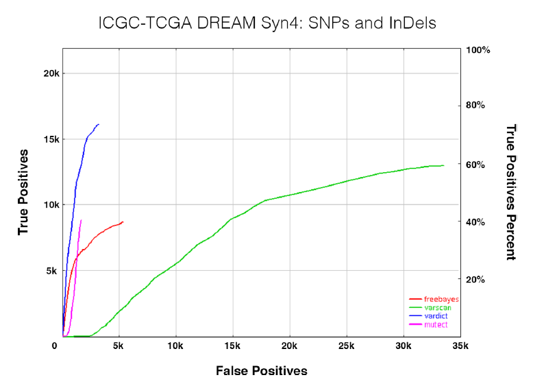

深圳gene+科技有限公司--工作流水：
20190729：
1）：CNV分析存在的问题。
2）：最低、最高能容忍多少的嵌合？
3）：在许多情况下，特别是在实体肿瘤中，存在有大量的异质性核型，通过拷贝数的多少来定量癌细胞的占比是否可取？
如同通过体细胞的突变率来定量癌细胞的占比是否可取？
4）：文献涉猎总结：
4.1 Low-pass whole-genome sequencing in clinical cytogenetics: a validated approach
文献内容总结：
目的:染色体微阵列分析是产前产后诊断中拷贝数变异(CNV)检测的金标准。确定下一代测序(NGS)技术是否可以在常规临床应用中作为CNV检测的替代方法。
方法:采用低覆盖（hg19，600bp insert，50bpsereads，soap比对，0.25X，去重复，取唯一比对reads）全基因组测序管道对570例多中心患者进行全基因组CNV分析(> 50kb)。
可调滑动窗口，每个窗口包含read最少20个，window长度45-55KB. GC矫正+数据归一化，染色体失调区域屏蔽分析。GWSD质控（取copy值介于0.85-1.15之间的数据进行矫正，GC矫正后 GWSD<0.15，不合格率5.1%）。计算覆盖深度差值比，以圆形 峰槽方法确定边界。
gain: >1.1 (mosaics: 1.1-1.4) loss:<0.9 (mosaics: 0.6-0.9)
U-test P-value<0.0001(from a normal population with 100 samples13 (the 1000 Genomes Project)
CNV不能分析的区域（ 参考间隙、MHC簇和12个编码黑名单区域）
CNVs that overlap problematic regions such as reference gaps, the MHC cluster, and ENCODE blacklist regions [27] were filtered out (see Methods).
（27）. ENCODE Project Consortium. An integrated encyclopedia of DNA elements in the human genome. Nature 2012;489:57–74.
结论：验证结果，中国四个三甲医院中收集570个样本进行评估，检出率达到96.3， 失败病例(21/570)中，10例为早孕流产，3例为死产，8例为超声异常终止妊娠，他们的DNA质量都很差，很可能是由于胎儿死亡。
4.2A Comprehensive Workflow for Read Depth-Based Identification of Copy-Number Variation from Whole-Genome Sequence Data
文献内容总结：
目的： 建立一套完整的从实验到CNV检测WGS 分析流程。
方法： hg19，30X，350bpinsert，bwa比对，>=1Kb，去重复区域，每个窗口reads数量应大于等于30。
(1) the set of assembly gaps defined by UCSC, which includes centromeres, telomeres, constitutive heterochromatin domains, gaps between or within clones and contigs, and the repeat-dominated short arms of chromosomes 13, 14, 15, 21,and 22;
(2) the UCSC list of segmental duplications;
(3) the pseudoautosomal regions of the sex chromosomes;
(4) repeat regions as defined by RepeatMasker version open-3-2-7 (see Web Resources) using the –s (sensitive) option with release 20090120 of library RepeatMaskerLib.embl;
For generating filtered sets of CNVs, a given CNV was removed if R70% of the CNV overlapped with RLCRs.（如果检测CNV超过70%被repeat区域所覆盖，则放弃之。）
Platypus【41】Integrating mapping-, assembly- and haplotype-based approaches for calling variants in clinical sequencing applications.(不分析SV)
Seurat【33】Identification of somatic mutations in cancer through bayesian-based analysis of sequenced genome pairs （肿瘤WGS SV）
VarDict【18】VarDict: a novel and versatile variant caller for next-generation sequencing in cancer research.
Varscan2 somatic mutation and copy number alteration discovery in cancer by exome sequencing. Genome Res 2012;22(3):568–76.
VarScan2: Somatic mutation and copy number alteration discovery in cancer by exome sequencing
read depth 方法 + circular binary segmentation (CBS) algorithm 环切二分法(Seshan and Olshen 2010)
A subsequent joining procedure merged adjacent segments of similar copy number and classified them as either large-scale (>25% of chromosome arm) or focal events。
选五个卵巢癌数据，与SNP-array、WGS作比较。
large CNV（90% 的灵敏性）
focal CNV
Our exome-based method detected 488,721 focal events (72.14% of the total),
achieving higher sensitivity than the SNP array (65.39%)
but lower than WGS (79.05%).
varDict: a novel and versatile variant caller for next-generation sequencing in cancer research.
优点：可以检测倒位.
缺陷：Insertions larger than two read lengths are not called.
with sizes ranging from 50 bp to 139 kb. VarDict was able to call 2407 (90%) of these deletions.

问题1：没有提到GC矫正 和 RLCRs（高重复和低复杂性区域）的过滤问题。
20190805：
1）辅助玲清完成sratoolkit 工具的部署。
2）熟悉WGS_WES_pip.SOP 流程的工作。
3）文献阅读与总结+CNVkit的测试。
4）Neoantigen-directed immune escape in lung cancer evolution 文献分享。
20190809：
1）SSR数据转fastq的处理。第一批完成21/24，有三个数据处理多次不成功。第二批数据完成12/12。第三批数据完成7/36，数据仍在处理中。
2）学习了解Neoantigen分析内容与套路。
3）HLA分型软件的测试。其中Optitype软件最高效，5分钟处理完成，但是只能进行I类分型；HLAminer序列比对算法处理25分钟左右，可以进行I类和II类分型，组装算法处理极其缓慢，已运行50h还在运行中，暂无结果。HLA-reporter 软件分析无结果。HLAminer序列比对算法结果与Optitype I类分型结果一致性约只有40%左右。
4）文献阅读分享：Neoantigen-directed immune escape in lung cancer evolution。
20190816：
1）SSR数据转fastq的处理。完成70/72（其中还有三个数据正在压缩），还有2个仍在重跑尝试。
2）熟悉WGS_WES_pip.SOP.md 流程，为SSR数据的处理做准备，任务测试中。
3）HLA 分型软件测试，尝试寻找了9个软件，其中有3款软件测试通畅，可以做HLA-II类分型的有HLA miner和seq2HLA，可暂时用以做pvac-seq分析。另HLAreporter比较麻烦，留给空闲时间再测试。
4）学习pvac-seq分析流程，对各块内容有了初步的了解。
5）熟悉WGS_WES_pip流程后 尽快处理掉70个SSR数据。
6）继续深入学习pvac-seq分析流程，添加HLA-II类分型结果，比较与I类分析结果差异。
20190821：
1）帮助士美完成1000G，ESP数据库的整理，完成vcf注释数据库的程序编写。
2）克隆北京数据生产流程，测试，用以对上批SSR数据进行处理（北京流程与深圳流程不大一样）。
3）CNVkit 软件安装测试。
@罗梓文 上周黄院提到你这边也参与程院士15对WGS项目，这个项目目前已经做好比对，见/mnt/X500/farmers/lijun/prj/baijin_ES_cancer_Cheng/01.MP。后续的SNV，SV你可以先根据wgs分析文档，就是上周5你跟说的那个文档进行分析。同时你看下cnv 全基因组这块能否有好的方法，之前@裴士美 他们搞过一版，但效果不理想。这块我们希望能尽快这周差不多有些结果反馈给北京那边。你先熟悉下，初步计划下如何推进，明早我们一起过下。后期可能就靠你整体负责这个项目的分析及与北京那边的交付。
4）人重72 个数据bam分析，任务已经投递。
20190826：
1) TMB 计算流程包装。
2）72 SRR 数据bam分析。
3）15对WGS CNV结果优化（暂时先取ichorCNA+meanPON 方法结果-> gatk结果最优）。
20190902：
1）HLA LOH 研究一下。（purnCN or titanCNA ?）
2）15WGS-CNV分析结果已经提交。
3）15WGS-sv 分析，已经重新跑上（问题：/usr/local/lib/perl5/Bio/DB/ 目录下perl 模块的问题，用自己环境下的perl 就好了）
4）72BAM+52wgs BAM全部完成。
5）sv完成14/15，有一个样本分析卡住了，已重新分析。整理已完成14个sv分析结果，详细阅读meerkat软件说明文档，整理结果解释与说明文档，为结果提交做准备。存在问题：1）meerkat对6-8X全基因组数据推荐2步过滤法，而现在流程默认用的7步过滤法（meerkat推荐WGS30X以上），可能会影响结果灵敏性，经商议暂时先以此结果提交。2）近800个SV结果都没有注释上geneName，注释步骤可能有问题（核查分析无报错），但暂时不影响结果交付。
6）lohhla分析。软件安装测试成功，已完成27例WES样本的hla-I类分型，loh分析步骤任务正在投递中。
20190909：
1）15个WGS-SV结果整理提交。
2）lohhla 结果比较整理。通过对27对WES数据的分析，其中hla-loh发生率为12/27=44.44%，与文章中报道结果一致性较高。（Allele-Specific HLA Loss and Immune Escape in Lung Cancer Evolution:we identified HLA LOH in 17/37 (46%) tumors ）
3）比较27对WES数据hla-loh结果与CNV-LOH数据结果，结果一致性不高，gene级别的loh 和arm级别的loh相关性不高。
4）测试HLA-II类分型软件hla-la，经比较统计其与optitype的I类分型结果，I类4位分型结果一致性不到10%。考虑可能是该WGS数据深度较低导致分型结果不准确的缘故。找了7个高深度样本，hla-la+optitype+hlaminer分析任务均已投递，下周有结果了再系统的比较一下。
5）熟悉oncoWES各步骤分析流程并整理成wdl。
6）
20190919：

20190923：
1）完善WDL流程，增加runtime 模块。完善功能
1）设置任务失败重投次数3；2）对每个task 分别指定不同的资源数量，资源合理利用；3）部分简单task 提取出来Local 运行，提高任务投递效率。
2）